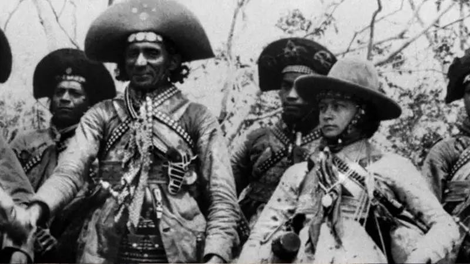

Quem foram Lampeão e Maria Bonita ?
Lampião liderava o grupo com habilidade e carisma, sendo temido pelos
inimigos e respeitado pelos seguidores. Seus ataques muitas vezes tinham
motivações políticas, sociais e econômicas, e ele era visto por alguns
como um herói popular, especialmente entre os mais pobres, enquanto outros
o consideravam um criminoso.

Maria Bonita, cujo nome verdadeiro era Maria Gomes de Oliveira, entrou
para o cangaço após se apaixonar por Lampião. Ela foi uma das poucas
mulheres a participar ativamente do grupo, desafiando as normas sociais
da época. Maria Bonita se destacava pela sua coragem, determinação e
habilidade no manejo das armas.
O casal e seu bando viveram uma vida nômade, percorrendo o sertão nordestino,
enfrentando confrontos com as forças policiais e realizando assaltos a
fazendas e cidades. Sua história foi romantizada em várias obras literárias,
músicas e filmes, tornando-se parte do folclore brasileiro.